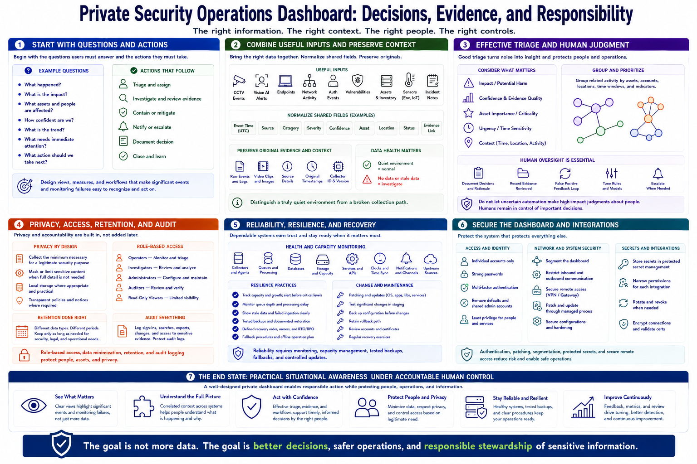

Course Summary and Key Takeaways
Connecting to LMS... Progress: in progress

Narration
A private security operations dashboard should support decisions, not merely display data. Start with the questions authorized users must answer and the actions they need to take. Then select views, measures, and workflows that make significant events and monitoring failures easy to recognize.
Combine useful inputs such as CCTV events, local vision alerts, endpoints, network activity, authentication, vulnerabilities, assets, sensors, and incident notes. Normalize shared fields while preserving original evidence and source context. Distinguish a quiet environment from a broken collection path.
Effective triage considers impact, confidence, evidence, asset importance, and urgency. Group related activity, document human decisions, and feed false-positive outcomes back into careful tuning. Do not let uncertain automation make high-impact judgments about people.
Privacy, role-based access, data minimization, retention, and audit logging belong in the design. Reliability requires health monitoring, capacity management, tested backups, fallback procedures, and controlled updates. The dashboard itself needs authentication, patching, segmentation, protected secrets, and secure remote access.
The end state is practical situational awareness under accountable human control. A well-designed private dashboard helps people review evidence and respond responsibly while preserving resilience, limiting unnecessary collection, and protecting the sensitive information entrusted to the system.